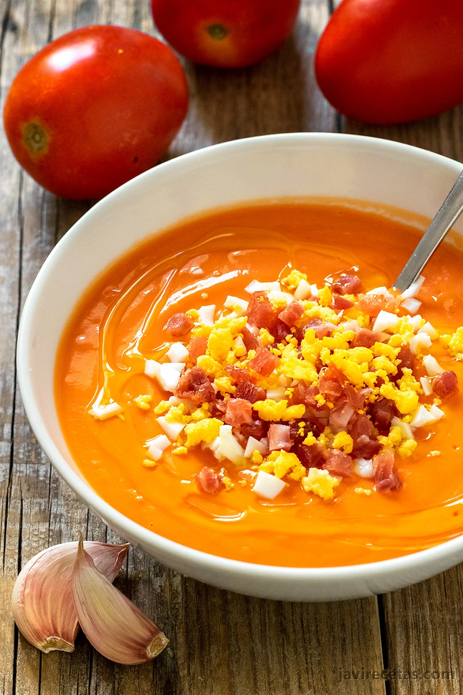

Salmorejo

Description
Salmorejo is a classic soup made primarily with tomatoes and bread. It’s best with a splash of sherry vinegar, but Andalusian tomatoes pack a good hit of acidity, so they often omit it in Spain. It’s also frequently made with pan de telera, a type of hard roll, which thickens the soup, but anything from a ciabatta to a rustic white loaf is good here.
Ingredients
- 2 1/2 pounds vine-ripened tomatoes, cored and chopped
- 1/2 pound rustic white bread, crust removed, bread cubed (2 1/2 cups)
- 2 garlic cloves
- 1 teaspoon sherry vinegar
- 1/4 cup extra-virgin olive oil, plus more for serving
- Kosher salt
- 2 hard-boiled eggs, peeled and chopped
- 1/2 cup chopped serrano ham
Steps
- In a blender, puree the chopped tomatoes with the bread, garlic, sherry vinegar and 1/2 cup of water at high speed until very smooth, about 1 minute.
- With the blender on, drizzle in the 1/4 cup of olive oil until incorporated.
- Season with salt.
- Cover and refrigerate until the soup is cold, at least 30 minutes.
- Divide the soup among 4 bowls.
- Garnish with the chopped eggs and ham.
- Drizzle with olive oil and serve.